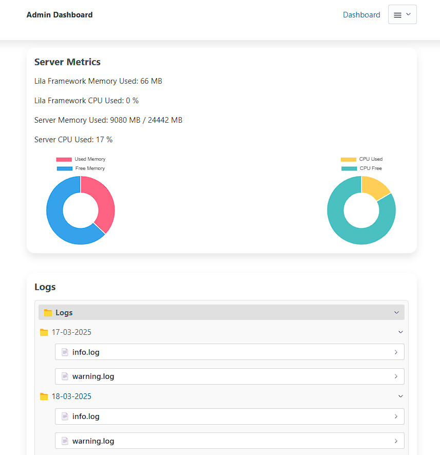

👤 Admin Panel
The Admin
module allows you to manage an admin panel for your application.
It includes authentication, model management, system metrics, and more. This panel is
highly customizable and integrates easily with your application.
The admin panel is now more modular and flexible. All admin-related components
(templates, routes, and configuration)
are located in the admin
folder, making it easier to customize and extend.
✨ Key Features
- Authentication: Secure login and logout for administrators.
- Model Management: Automatically generates routes and views to manage your models.
- System Metrics: Monitors memory and CPU usage for both the application and the server.
- Password Management: Allows administrators to change their passwords.
- Logs: Enables administrators to view application
Logs.
🚀 Basic Usage
To use the admin panel, you need to import the Admin
class from
admin.routes
and pass it
an optional list of models you want to manage. Each model must implement a
get_all
method to be displayed in the admin panel.
# English: Here we activate the admin panel with default settings.
# Here we activate the admin panel with default settings.
from app.routes.admin import Admin
from app.models.user import User
admin_routes=Admin(models=[User])
all_routes = list(itertools.chain(routes, api_routes,admin_routes))
🗄️ Setup and Migrations
Before using the admin panel, you need to run the migrations:
lila-migrations
🔑 Creating Admin Users
Admin users can be created via command line with customizable parameters:
# Default usage (random password generated)
lila-create-panel-admin
# With custom username and password
lila-create-panel-admin --user myadmin --password mysecurepassword
🛤️ Generated Routes
The admin panel automatically generates the following routes:
You can access the templates in the resources/html/admin
folder.
- Login:
/admin/login(GET/POST) - Logout:
/admin/logout(GET) - Dashboard:
/admin(GET) - Model Management:
/admin/{model_plural}(GET)
🛡️ Authentication Middleware
To protect routes and ensure only authenticated administrators can access them, use the
@admin_required
decorator from core/admin.py.
from lila.core.admin import admin_required
@router.route(path="/admin", methods=["GET"])
@admin_required
async def admin_route(request: Request):
menu_html = menu(models=models)
return await admin_dashboard(request=request, menu=menu_html)
📊 System Metrics
The admin panel displays real-time metrics, including:
- Lila framework memory usage.
- Lila framework CPU usage.
- System memory usage.
- System CPU usage.
These metrics are updated every 10 seconds.
📋 Logs
In Lila, we use a middleware that you can enable or disable if you want to use
Logs
for info, warnings, or errors in your application.
The middleware is located in core/middleware.py
and is added to the
application with:
app.add_middleware(ErrorHandlerMiddleware).
This helps generate logs that you can view in the admin panel, organized by date (in folders) and type.


🔑 Creating Administrator Users (Simple Command)
In addition to the full panel creation command, you can now create individual administrators without affecting routes, middlewares, or existing configurations. This command is useful for quickly adding new admin users.
# Create an administrator with specific username and password
lila-create-admin --username myadmin --password mysecretpassword
# Create an administrator with a custom username and auto-generated password
lila-create-admin --username myadmin
Note: This command only adds the admin user to the database. It does not generate routes, middlewares, or templates, so it can be used even if the panel is already active or customized.